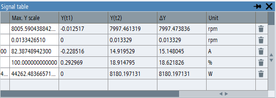

When either one of the first two measuring cursors, or both are switched on in the trace diagram, additional columns appear in the signal table. These columns display the values of the signals at the current positions of the two cursors and the difference of the signal values.
The cursor data columns are automatically hidden when the cursors are deactivated.
If there is no measured value available for a signal at the current position of the cursor, the value of the previous measuring point is displayed. This can be the case, for example, if signals were measured with different sampling rates.